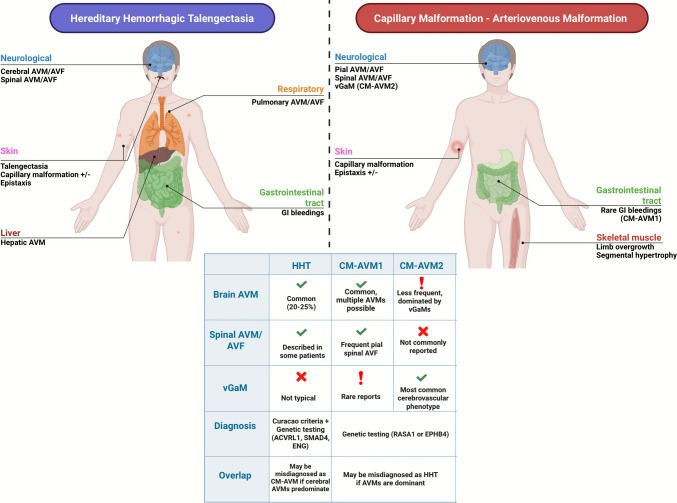
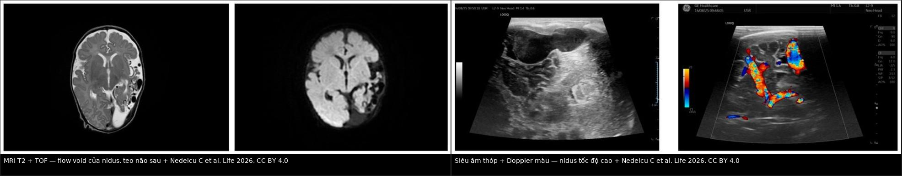
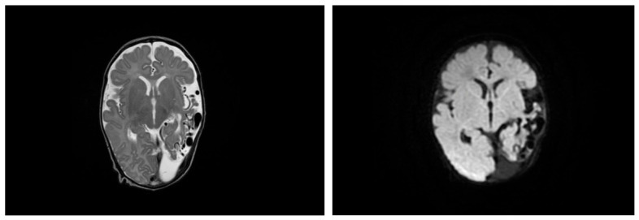
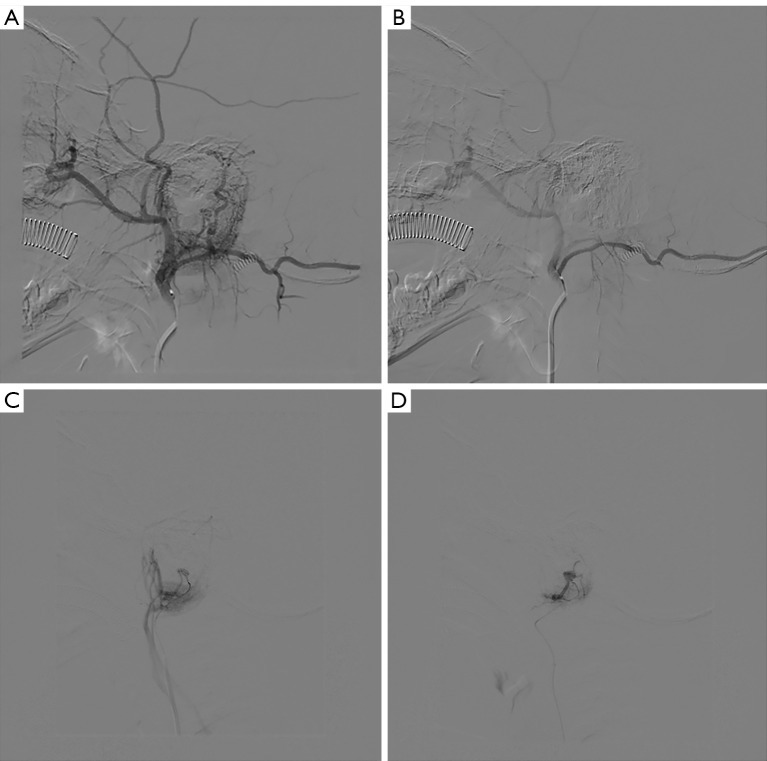
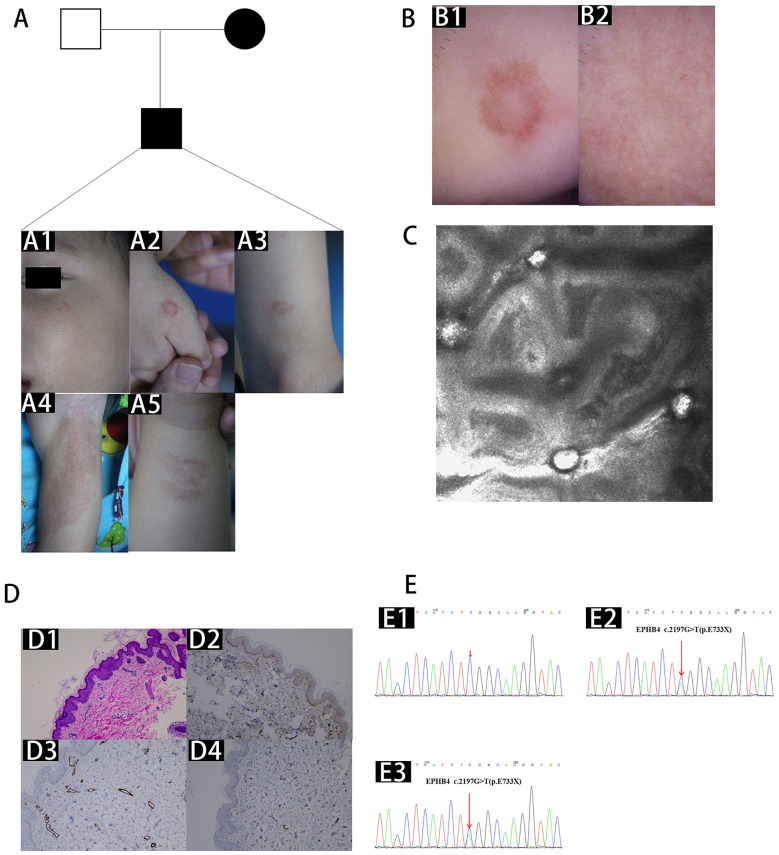

746 — Hội chứng mảng mao mạch – dị dạng động tĩnh mạch (CM-AVM): mảng đỏ "quầng trắng" + shunt não–tủy tốc độ cao / Capillary malformation–arteriovenous malformation syndrome
Tags: pattern:mang-mao-mach pattern:shunt-toc-do-cao pattern:flow-void pattern:di-dang-dong-tinh-mach vung:da vung:nao vung:tuy vung:chi score:CM-AVM-criteria protocol:MRI-nao-tuy-MRA protocol:TOF protocol:US-Doppler-TCD protocol:DSA
Mức chắc chắn (certainty): tổng hợp y văn (literature synthesis) — tổng quan có hệ thống 148 bệnh nhân CM-AVM đã xác định gen trong 37 nghiên cứu (Childs Nerv Syst 2025, PMC12705803); tổng quan 127 bệnh nhân EPHB4 + một gia đình 4 thế hệ (Acta Derm Venereol 2022, PMC9558756); 8 gia đình Trung Quốc (Front Med 2026, PMC13065680); 3 ca sơ sinh CM-AVM1/CM-AVM2/đột biến kép có theo dõi Doppler–MRI (Life 2026, PMC13302150); 9 trẻ nút mạch vùng tai (Quant Imaging Med Surg 2025, PMC12591897). Các ngưỡng "chụp gì, khi nào" là khuyến cáo được các nguồn trên trích lại, không có thử nghiệm ngẫu nhiên.
Câu chốt: CM-AVM không phải "mảng đỏ bẩm sinh lành tính" mà là bệnh mạch máu di truyền trội, có 2 cửa tử vong: (1) AVM/AVF màng mềm trong não–tủy → xuất huyết, động kinh, thiếu máu cục bộ do "steal"; (2) vein of Galen malformation (vGaM) ở sơ sinh → suy tim lưu lượng cao, tăng áp động mạch phổi, tổn thương não. Ba câu hỏi ở mọi trẻ có ≥ 3 mảng mao mạch (capillary malformation, CM): đếm và tả mảng da (có quầng nhạt không?) · có shunt tốc độ cao trong não/tủy không (MRI/MRA) · gen RASA1 hay EPHB4. Sai lầm hay gặp: gọi là HHT rồi đi tầm soát phổi–gan (CM-AVM hầu như không có PAVM) trong khi bỏ qua não–tủy — đúng chiều ngược lại.
1. Tổng quan bệnh học – cơ chế hình ảnh
1.1 Bệnh học: hai gen, một con đường RAS–MAPK, cơ chế "hai đòn"
- CM-AVM1 (OMIM 608354): đột biến mất chức năng RASA1 (nhiễm sắc thể 5) — mã hoá p120-RasGAP, yếu tố ức chế đường RAS–MAPK. Mất một alen → ức chế không đủ → tín hiệu RAS/ERK tăng ở tế bào nội mô.
- CM-AVM2 (OMIM 618196): đột biến EPHB4 (nhiễm sắc thể 7) — thụ thể tyrosine kinase của trục ephrin-B2/EphB4, quyết định biệt hoá tĩnh mạch – động mạch trong phôi; đột biến cũng hội tụ về RAS–MAPK/VEGF (PMC12705803).
- Cơ chế "hai đòn" (two-hit) giải thích vì sao cùng một đột biến dòng mầm mà chỉ một vài ổ thành AVM: đột biến dòng mầm + đột biến soma thứ hai tại cụm nội mô tại chỗ → mất hoàn toàn chức năng tại clone đó → nidus khu trú. Đã tìm thấy đột biến soma alen RASA1 thứ hai trong mô AVM (PMC12705803); mô hình này cũng dùng cho Parkes Weber (đột biến thể khảm RASA1; PMC11532015).
- Di truyền: trội nhiễm sắc thể thường, thấm không hoàn toàn: RASA1 90–99%, EPHB4 93% (tổn thương da gần như 100%); de novo ~25%; thể khảm có ghi nhận (PMC9558756, PMC13065680).
1.2 Ngưỡng định lượng trụ cột
| Đại lượng | Con số | Nguồn |
|---|---|---|
| Tần suất CM-AVM | ~1/100.000 (Bắc Âu); ước tính từ ExAC: 1/20.000 (CM-AVM1) và 1/12.000 (CM-AVM2) | PMC13302150 |
| Mảng mao mạch (CM) trong dân số chung | 0,3–0,5% (phần lớn là bớt rượu vang đơn độc, không phải CM-AVM) | PMC13065680 |
| Tiêu chuẩn lâm sàng CM-AVM | ≥ 3 CM điển hình; < 3 vẫn chấp nhận nếu có tiền sử gia đình hoặc đột biến đã xác định | PMC13065680 |
| Kích thước CM | điển hình 1–3 cm, đã ghi nhận tới 15 cm; quầng nhạt (white halo) quanh CM do vi shunt | PMC9558756 |
| Shunt tốc độ cao (AVM/AVF) ở người mang đột biến | ~1/3 bệnh nhân; 18,1% trong loạt EPHB4 (23/127) | PMC13065680, PMC9558756 |
| Loại tổn thương nội sọ (148 bệnh nhân) | pial AVF 43,3% · AVM 36,0% · vGaM 17,3% · phình mạch 1,3% · cavernoma 2,0%; không có AVF màng cứng | PMC12705803 |
| Theo gen — RASA1 (n = 127) | pial AVF 48,03% · AVM 42,52% · vGaM 9,44% · cavernoma 1,57% · phình 0,79% | PMC12705803 |
| Theo gen — EPHB4 (n = 21) | vGaM 66,7% · pial AVF 9,5% · AVM 0% · phình 4,8% · cavernoma 4,8% | PMC12705803 |
| Điều trị trong loạt 148 ca | nút mạch nội mạch 24,7% · mổ 5,3% · theo dõi 0,7% · phối hợp 0,7% | PMC12705803 |
| Loạt EPHB4 (n = 127) | nhiều CM 89,76%, CM đơn độc 9,44%; AVM/AVF 18,1%, trong CNS 3,9%; giãn mạch 22%; Bier spots 15,7% | PMC9558756 |
| Nút mạch vùng tai ở trẻ | 9 trẻ / 22 lần, 2,4 ± 0,8 lần/ca, hiệu quả 9/9, 1 ca bùng lại sau 1 tuần, 0 biến chứng, theo dõi trung vị 8 tháng | PMC12591897 |
1.3 TẠI SAO hình ảnh trông như vậy (vật lý + huyết động)
- "Flow void" trên MRI = proton chạy quá nhanh. Trong nidus và tĩnh mạch dẫn lưu, máu chảy nhanh và rối loạn (TCD đo được PSV 111 cm/s ở động mạch não giữa; 249/160 cm/s tâm thu/tâm trương ở động mạch xuyên — PMC13302150) nên phần lớn spin rời mặt cắt giữa lúc kích thích và lúc thu tín hiệu → mất tín hiệu (signal void), không cần cản quang. Đây là lý do chuỗi T2/TOF đủ để thấy nidus, còn DWI không hạn chế khuếch tán vì không phải nhồi máu cấp.
- TOF-MRA sáng vì "máu mới vào": spin trong động mạch nuôi chưa bị bão hoà nên tạo tín hiệu cao; tĩnh mạch dẫn lưu ngấm sớm thì động mạch trên MRA/CTA/DSA = bằng chứng shunt (không có giường mao mạch trung gian).
- Giãn tĩnh mạch và xoang = hậu quả áp lực, không phải dị dạng thứ hai. Ca 1: xoang sigma–ngang giãn không đối xứng, tĩnh mạch quanh não giãn, xoang sigma trái phình dạng túi — tĩnh mạch "động mạch hoá" vì nhận toàn bộ lưu lượng shunt (PMC13302150).
- Teo nhu mô + "steal" = thiếu máu mạn, không phải loạn sản. Máu "bị hút" qua shunt làm vùng vỏ quanh nidus giảm tưới máu mạn → teo parieto-choccipital trên T2 (ca 1); vì mạn và còn bù trừ nên không hạn chế khuếch tán, khác nhồi máu cấp. Hệ quả xương: dày vòm sọ do tăng tưới máu lâu năm (ca 3 — PMC13302150).
- Trên siêu âm thóp: nidus hiện đám mạch giãn, xoắn, dòng xoáy; Doppler màu đầy màu, hỗn hợp đỏ–xanh (aliasing) vì vận tốc vượt thang đo. Chỉ số sức cản (RI) giảm là dấu hiệu định lượng của shunt: ca 2 có RI 0,80 → 0,34 trong vài ngày, kèm tụt huyết áp tâm trương và suy tim cung lượng cao (PMC13302150).
- Vì sao tim là "đầu cuối" của shunt não: mỗi ml máu qua nidus quay lại tim ngay mà không qua giường mao mạch → tăng lưu lượng, giãn buồng tim phải, tăng áp phổi. Ở sơ sinh (vGaM) đây là lý do nhập NICU vì suy hô hấp/tăng áp phổi chứ không phải vì thần kinh.
2. Mẫu hình + chẩn đoán phân biệt theo vị trí (Gamut)
2.1 Mẫu hình da: "nhiều mảng đỏ nhỏ có quầng nhạt"
- CM điển hình: dát đỏ–hồng, 1–3 cm, có quầng nhạt quanh (do vi shunt làm co mạch tại chỗ), ở mặt, thân, chi; có từ lúc sinh hoặc xuất hiện dần; đếm được nhiều ổ (đôi khi "không đếm xuể"). Bier spots và giãn mạch niêm mạc gặp ở CM-AVM2 (22% và 15,7%) và chính là lý do dễ chẩn đoán nhầm HHT.
- Gamut theo số lượng + quầng: 1 mảng → bớt rượu vang đơn độc (0,3–0,5% dân số), CM-AVM thể đơn độc (9,44% loạt EPHB4), Sturge–Weber nếu ở V1; nhiều mảng có quầng → CM-AVM1/CM-AVM2 (hàng đầu), HHT, dày mạch mao mạch – dị dạng mạch có phì đại (DCMO), cutis marmorata telangiectatica congenita (CMTC); mảng + phì đại chi → Klippel–Trénaunay (chậm dòng) hoặc Parkes Weber (nhanh dòng).
2.2 Mẫu hình nội sọ: shunt nhanh ở trẻ/sơ sinh
- Pial AVF (43,3%) — ống thông trực tiếp động–tĩnh mạch không có nidus, màng mềm; RASA1 chiếm ưu thế (48,03% vs 9,5%).
- AVM có nidus (36,0%) — nidus + động mạch nuôi + tĩnh mạch dẫn lưu; chỉ gặp ở RASA1 trong loạt 148 ca (42,52%; EPHB4 0%).
- vGaM (17,3%) — giãn phình hệ Galen, thường gặp nhất ở EPHB4 (66,7%), biểu hiện sơ sinh: suy tim lưu lượng cao, tăng áp phổi, giãn não thất.
- Hiếm: phình động mạch nội sọ 1,3%, cavernoma 2,0%. Không có AVF màng cứng trong 148 ca → nếu thấy AVF màng cứng, phải nghĩ nguyên nhân khác.
- Mnemonic "RASA1 rộng – EPHB4 hẹp": RASA1 = Rộng (pial AVF + AVM + vGaM hiếm); EPHB4 = Early (sơ sinh) + Vein of Galen, không AVM não.
2.3 Mẫu hình tủy và chi
- Tủy: AVF/AVM màng mềm tủy đã mô tả ở CM-AVM (đặc biệt RASA1) — cùng cơ chế shunt, biểu hiện yếu chi, rối loạn cơ tròn, đau lưng, dễ bị quy cho "viêm tủy" nếu không thấy flow void trên T2.
- Chi (Parkes Weber): mảng CM + shunt nhanh trong da/cơ/xương + phì đại chi (ca 2: chênh vòng chi ~2 cm ở tay) — thể khảm của CM-AVM, khác Klippel–Trénaunay ở tốc độ dòng.
3. Bảng so sánh phân biệt (ma trận đối chiếu)
| Thực thể (entity) | Hình ảnh điển hình | Chốt vào (rule-in) | Chốt loại (rule-out) | Gợi ý xác nhận |
|---|---|---|---|---|
| CM-AVM1 (RASA1) | Nhiều CM 1–3 cm có quầng; pial AVF 48,03%, AVM não 42,52%; có thể AVF tủy, Parkes Weber | ≥ 3 CM + tiền sử gia đình; pial AVF/AVM không có bệnh phổi–gan | Phổi–gan có nhiều AVM + chảy máu cam mạn → HHT | Gen RASA1; MRI/MRA não–tủy |
| CM-AVM2 (EPHB4) | CM nhiều ổ + giãn mạch 22%, Bier spots 15,7%; vGaM 66,7%, AVM não 0% | vGaM ở sơ sinh + mảng da + giãn mạch niêm mạc | Có AVM nidus não → nghĩ RASA1 hơn | Gen EPHB4; MRI/MRA + siêu âm tim |
| HHT (ENG/ACVRL1/SMAD4) | Giãn mạch môi–lưỡi–đầu ngón, nhỏ như đầu đinh ghim; PAVM 15–50%, AVM não 10–23%; chảy máu cam > 90% người lớn | Chảy máu cam tái diễn + giãn mạch niêm mạc + PAVM/AVM gan | vGaM (HHT không có) ; không PAVM sau tuổi lớn → ít khả năng HHT | Panel ENG/ACVRL1/SMAD4; CT ngực + TTCE |
| Sturge–Weber (GNAQ thể khảm) | Bớt đỏ V1 + angioma màng não cùng bên + teo vỏ, vôi hoá "đường ray"; chậm dòng, không flow void | Bớt V1 + teo vỏ/angioma cùng bên + glôcôm | Có flow void + tĩnh mạch dẫn lưu sớm → không phải SWS | MRI + cản quang; nhãn áp |
| Klippel–Trénaunay (PIK3CA) | Bớt đỏ + giãn tĩnh mạch bề mặt + phì đại mô–xương chi; chậm dòng | Tam chứng bớt + giãn TM + phì đại chi, không thrill | Có thrill/bruit, tĩnh mạch dẫn lưu động mạch hoá → Parkes Weber | Doppler: không có phổ động mạch trong tổn thương |
| Parkes Weber (RASA1/EPHB4 thể khảm) | Mảng da + shunt nhanh + phì đại chi; có thể suy tim | Phì đại chi + Doppler phổ động–tâm trương + flow void | Không có shunt nhanh → KTS hoặc chỉ CM | Doppler + MRA/CTA + gen mô tổn thương |
| Bớt rượu vang đơn độc | Một mảng, không quầng, không triệu chứng | Một ổ, không tiền sử gia đình, không triệu chứng | ≥ 3 ổ, quầng nhạt, tiền sử gia đình | Không cần gen; theo dõi lâm sàng |

Sơ đồ đối chiếu HHT (trái) với CM-AVM1/CM-AVM2 (phải): HHT có PAVM và AVM gan; CM-AVM có pial AVF/AVM não và vGaM ở CM-AVM2, gần như không có AVM phổi–gan. Nguồn: Palermo M et al, Childs Nerv Syst 2025, CC BY 4.0.3.1 Đọc ảnh shunt tốc độ cao: 3 dấu hiệu định vị

Trái: MRI T2 + TOF — cụm flow void ở thuỳ chẩm–thái dương trái, teo nhu mô quanh và giãn khoang dịch. Phải: siêu âm thóp + Doppler màu — nidus mạch xoắn, dòng xoáy (aliasing). Nguồn: Nedelcu C et al, Life 2026, CC BY 4.0. Ảnh ghép letterbox.- Dấu 1 — flow void: chuỗi T2 (không cản quang) đã thấy "lỗ đen" mạch; nếu chỉ thấy trên T1 sau tiêm thì nghĩ tổn thương khác.
- Dấu 2 — tĩnh mạch dẫn lưu giãn sớm: xoang sigma/ngang giãn không đối xứng, có khi phình dạng túi — chốt shunt (ca 1).
- Dấu 3 — teo + steal: teo vỏ quanh nidus, không hạn chế khuếch tán; đừng đọc là "loạn sản vỏ não".
4. Protocol chụp + phân tầng xử trí
4.1 Chụp gì, cho ai
- Trẻ có ≥ 3 CM (hoặc < 3 kèm tiền sử gia đình/đột biến): khuyến cáo hiện hành là MRI + MRA não VÀ toàn bộ tủy cho mọi trẻ đạt tiêu chuẩn "có thể" hoặc "chắc chắn", kể cả không triệu chứng, vì tỉ lệ tổn thương nội sọ–tủy cao (PMC13302150, PMC12705803).
- Trình tự ở sơ sinh: siêu âm thóp + Doppler xuyên sọ (TCD) tại giường trước (nhanh, không gây mê) → nếu nghi shunt: MRI/MRA (T1, T2, FLAIR, DWI/ADC, TOF, MRA có cản quang) + siêu âm tim tìm suy tim cung lượng cao/tăng áp phổi.
- DSA (chụp mạch số hoá xoá nền) là chuẩn vàng về giải phẫu nidus, động mạch nuôi, tĩnh mạch dẫn lưu và bắt buộc trước nút mạch; dùng 3D xoay để chọn catheter.
- Đo và ghi vào báo cáo: đường kính nidus (mm — ca 1: 30 mm), số + đường kính động mạch nuôi, tĩnh mạch dẫn lưu, hẹp đường ra tĩnh mạch, mức teo/steal, có xuất huyết không; với AVM não có thể kèm Spetzler–Martin để so sánh theo dõi.
- Định lượng huyết động: TCD ghi PSV/EDV/RI từng động mạch (ca 1: MCA PSV 111 cm/s, RI 0,63; xuyên PSV 249/EDV 160 cm/s, RI 0,36); RI giảm dần là dấu shunt nặng lên (ca 2: 0,80 → 0,34).
- Tầm soát gia đình: khám da bố mẹ/anh chị em; panel gen tối thiểu RASA1 + EPHB4, và nếu có chảy máu cam/giãn mạch niêm mạc thì kèm ENG/ACVRL1/SMAD4 để loại HHT. Không cần tầm soát phổi–gan thường quy (xem mục 5).
4.2 Phân tầng xử trí
flowchart TD
A[Trẻ có ≥3 mảng đỏ + quầng nhạt] --> B[Khám da + đếm tổn thương + tiền sử gia đình]
B --> C[Panel gen RASA1 + EPHB4]
B --> D[MRI + MRA não và toàn tủy]
D --> E{Có shunt tốc độ cao?}
E -->|Không| F[Theo dõi lâm sàng + MRI định kỳ]
E -->|Có, không triệu chứng| G[DSA để lập kế hoạch]
E -->|Có, sơ sinh + suy tim| H[Siêu âm tim + hồi sức, can thiệp sớm]
G --> I[Nút mạch nội mạch ± phẫu thuật]
H --> I
I --> J[DSA kiểm tra sau nút + lâm sàng 1 tuần]
J --> F
- Nút mạch là điều trị chính: 24,7% trong 148 ca; loạt tai ở trẻ 9/9 hiệu quả, 2,4 ± 0,8 lần/ca, 0 biến chứng, nhưng 1 ca bùng lại sau 1 tuần → phải khám + DSA kiểm tra sớm (1 tuần), không chờ 3 tháng.
- Phẫu thuật dành cho tổn thương không tiếp cận được bằng catheter, máu tụ chèn ép, hoặc di chứng (5,3% loạt 148 ca).
- vGaM sơ sinh: ưu tiên ổn định huyết động + can thiệp sớm vì suy tim/tăng áp phổi là nguyên nhân tử vong, không phải bản thân túi phình.
- Tổn thương da: đa số theo dõi/laser thẩm mỹ; tổn thương da–dưới da khu trú có thể tiêm bleomycin (PMC13065680) — không phải chỉ định cấp cứu.
5. Biến thể bình thường và cạm bẫy
- Cạm bẫy #1 — gọi CM-AVM là HHT. CM-AVM2 có giãn mạch 22%, Bier spots 15,7%, có thể chảy máu cam; nhưng PAVM 15–50% của HHT không có ở CM-AVM (loạt > 300 người mang RASA1: không PAVM/AVM gan; ngoại lệ rất hiếm được báo). Vì vậy đừng đặt lịch CT ngực/TTCE định kỳ cho CM-AVM, và đừng bỏ MRI não–tủy. Đây cũng là chỗ đề bài BACKLOG ban đầu ghi sai ("CM-AVM cũng gây PAVM/bAVM") — nguồn 2025–2026 cho thấy bAVM có, PAVM gần như không.
- Cạm bẫy #2 — một mảng đỏ = "bớt lành tính". CM đơn độc chiếm 9,44% loạt EPHB4 và không loại trừ CM-AVM khi có tiền sử gia đình; ngược lại 0,3–0,5% dân số có bớt rượu vang không phải CM-AVM → dựa vào số lượng + quầng + gia đình, không dựa vào màu.
- Cạm bẫy #3 — "flow void là AVM". Phình động mạch, biến đổi tĩnh mạch, và AVM đã huyết khối (mất flow void) đều có thể gây nhầm: AVM huyết khối trông như khối đặc/cavernoma; phình mạch không có tĩnh mạch dẫn lưu sớm.
- Cạm bẫy #4 — tìm AVF màng cứng. Trong 148 ca CM-AVM không có AVF màng cứng; nếu gặp, phải nghĩ nguyên nhân khác (sau chấn thương, huyết khối xoang) và không gán cho RASA1/EPHB4.
- Cạm bẫy #5 — teo não bị đọc là loạn sản/hội chứng bẩm sinh khác. Teo do steal có flow void + TCD tăng vận tốc; loạn sản vỏ não không có shunt.
- Cạm bẫy #6 — sơ sinh "chỉ có mảng đỏ" nhưng đang suy tim. Ca 2 nhập viện vì tăng áp phổi nặng, chênh vòng tay ~2 cm, RI 0,80 → 0,34 trong vài ngày; nếu chỉ khám da sẽ bỏ sót shunt. Ở sơ sinh có mảng đỏ + suy tim: siêu âm tim + TCD + MRI/MRA ngay.
- Biến thể bình thường: Bier spots (đốm nhạt trên nền da ửng đỏ do co mạch), cutis marmorata khi lạnh, nevus araneus — không phải CM-AVM; nhưng Bier spots + nhiều CM là gợi ý CM-AVM2.
6. Tự lượng giá — Blind Quiz
Ca 1 — Bé trai 1 tháng tuổi, có mảng nhạt vùng chẩm, tiếng thổi sọ, tim phải giãn. Nhìn 2 lát cắt trước, mô tả trước khi mở đáp án.

- Gợi ý lâm sàng: không co giật, không xuất huyết; bác sĩ tim mạch nghi "bất thường hồi lưu tĩnh mạch phổi".
- Câu hỏi: có bao nhiêu dấu hiệu của shunt tốc độ cao? Chẩn đoán? Cần làm gì tiếp?
Bấm để hiện đáp án (findings + chẩn đoán)
- Findings: cụm flow void lớn ở thuỳ chẩm–thái dương trái (nidus 30 mm), tĩnh mạch quanh não và xoang sigma trái giãn/phình, teo nhu mô parieto-choccipital, không hạn chế khuếch tán.
- Chẩn đoán: AVM não tốc độ cao trong CM-AVM1 (RASA1 c.2422_2423del); TCD xác nhận PSV 249, EDV 160 cm/s, RI 0,36.
- Vì sao: flow void = spin rời mặt cắt; teo = steal mạn; không hạn chế khuếch tán loại nhồi máu cấp.
- Nguồn ảnh: Nedelcu C et al, Life 2026 (PMC13302150), Fig. 2, CC BY 4.0.
Ca 2 — Bé gái 10 tuổi, mảng đỏ sau tai, tiếng thổi sau tai; chụp mạch trước và sau can thiệp.

- Câu hỏi: tổn thương cấp máu từ đâu? Sau nút mạch còn shunt không? Vì sao phải chụp lại?
Bấm để hiện đáp án (findings + chẩn đoán)
- Findings: (A) nidus mạch dày đặc sau tai, động mạch nuôi từ hệ cảnh ngoài, tĩnh mạch dẫn lưu đổ sớm; (B) sau nút: mất tưới máu nidus, còn giường mô; (C, D) tổn thương nhỏ vùng tai — trước/sau nút.
- Chẩn đoán: CM-AVM vùng tai/ quanh tai — 9 trẻ, 22 lần nút, 2,4 ± 0,8 lần/ca, 1 ca bùng lại 1 tuần → phải chụp lại để không bỏ sót tái thông.
- Nguồn ảnh: Jiao B et al, Quant Imaging Med Surg 2025 (PMC12591897), Fig. 1, CC BY-NC-ND 4.0 (nguyên bản).
Ca 3 — Bé gái 5 tuổi, nhiều mảng đỏ hình vòng có tâm nhạt; mẹ và anh trai cũng có.

- Câu hỏi: gọi tên dấu hiệu da? Đủ tiêu chuẩn chẩn đoán chưa? Bước tiếp theo bắt buộc?
Bấm để hiện đáp án (findings + chẩn đoán)
- Findings: nhiều mảng mao mạch dạng vòng đường kính 1–3 cm với tâm nhạt (quầng trắng) ở thân/chi; dermoscopy thấy mạng mao mạch; phả hệ: mẹ + con + anh trai (trội).
- Chẩn đoán: CM-AVM (đủ ≥ 3 CM + tiền sử gia đình); bước tiếp: gen RASA1/EPHB4 + MRI/MRA não và toàn tủy (kể cả không triệu chứng).
- Vì sao: quầng nhạt do vi shunt; 1/3 bệnh nhân có shunt nhanh, phần lớn không triệu chứng lúc đầu.
- Nguồn ảnh: Lin Y et al, Front Med 2026 (PMC13065680), Fig. 1, CC BY 4.0.
Bài liên quan chéo
- 745 – HHT ở trẻ: tầm soát AVM phổi–não (hàng phân biệt bắt buộc: HHT có PAVM, CM-AVM thì không)
- 741 – Dị dạng mạch máu đầu–cổ ở trẻ: ISSVA, PHACE & LUMBAR (phân loại ISSVA, chậm dòng vs nhanh dòng)
- 743 – Chảy máu cam nặng/tái diễn ở trẻ: CTA, DSA & nút mạch (nút mạch vùng đầu–cổ)
- 744 – Chảy máu cam ở trẻ có rối loạn đông máu (khi "chảy máu cam" không do mạch)
Không dùng để chẩn đoán độc lập khi chưa có người hướng dẫn.